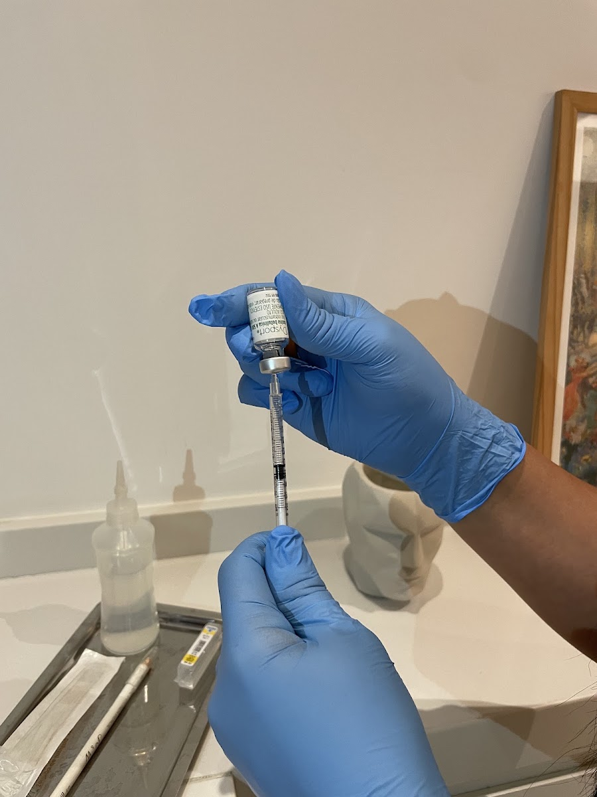
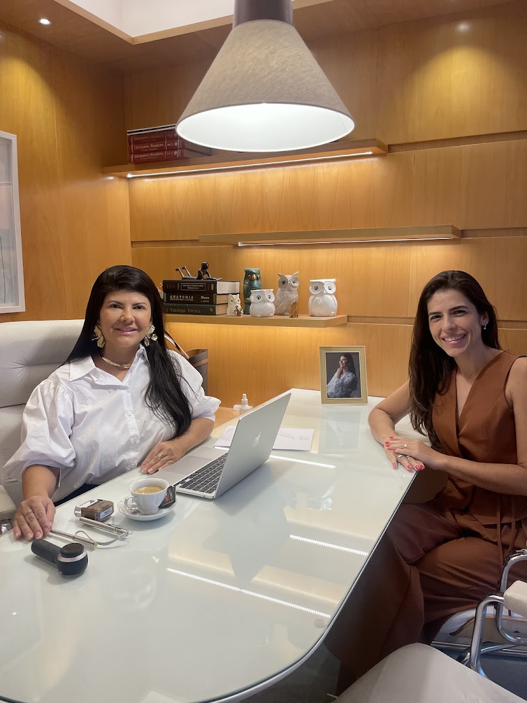
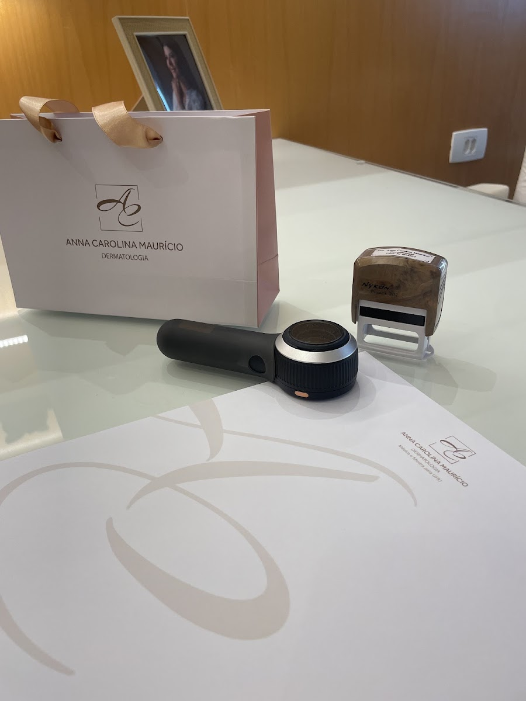
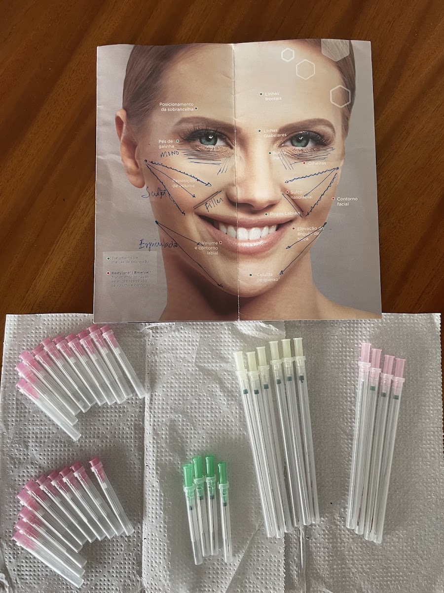
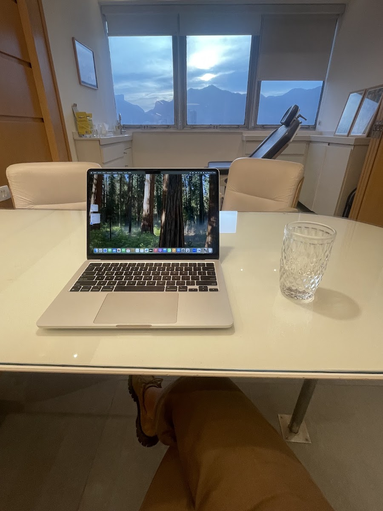
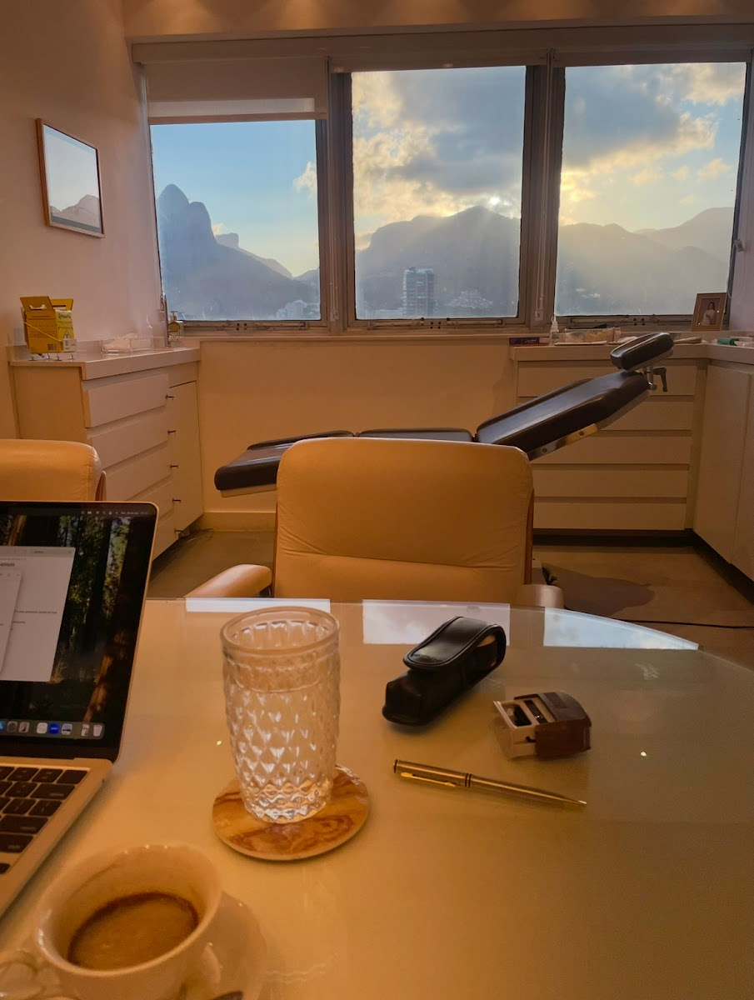
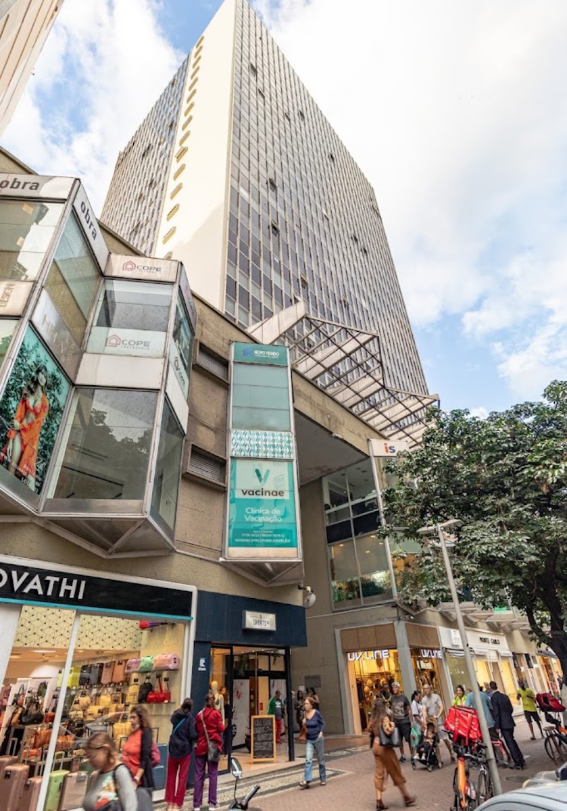

Toxina botulínica
Suaviza rugas de expressão com aplicação precisa e planejamento individual.
Dermatologia em Ipanema · CRM RJ 1044222
Dra. Anna Carolina Maurício, médica e mestra pela UFRJ. Avaliação completa e plano personalizado para a sua pele, do clínico ao estético.
5,0 no Google · 156 avaliações, todas com 5 estrelas


A médica
Dra. Anna Carolina Maurício é médica formada pela UFRJ, mestra em Dermatologia também pela UFRJ e pós-graduada em Dermatologia. Atua nas quatro frentes da especialidade: clínica, estética, cirúrgica e tricologia.
Aqui você é ouvida, examinada com calma e sai com um plano feito para o seu caso, sem exagero e sem promessa milagrosa.
Tratamentos
Cada plano começa com uma avaliação. Estes são os recursos mais procurados no consultório.

Suaviza rugas de expressão com aplicação precisa e planejamento individual.

Preenchimento com ácido hialurônico e bioestimuladores, com planejamento facial individual.

Tecnologias para manchas, textura, flacidez e rejuvenescimento.
Renovação da pele para manchas, acne e poros dilatados.
Investigação e tratamento da queda de cabelo e do couro cabeludo.
Diagnóstico e tratamento de doenças de pele, unhas e mucosas, além de pequenas cirurgias.
Quem já passou por aqui
O que as pacientes mais mencionam nas avaliações do Google:
Atendimento atencioso, com explicações claras em cada etapa.
Sensação de segurança e cuidado durante os procedimentos.
Planos personalizados, pensados para cada caso.
O consultório
Ambiente pensado para você relaxar antes, durante e depois da consulta, com vista para o Dois Irmãos.

Onde fica
Rua Visconde de Pirajá, 550, sala 2214
Ipanema, Rio de Janeiro/RJ · CEP 22410-002

Dúvidas frequentes
É uma conversa detalhada sobre a sua pele, seu histórico e seus objetivos, seguida de exame e de um plano de tratamento personalizado. Nada é indicado sem essa etapa.
No próprio consultório, em ambiente preparado e com acompanhamento próximo no pós.
Pelo WhatsApp, clicando em qualquer botão desta página. Você fala direto com a equipe e escolhe o melhor dia e horário.
Último passo
Preencha ao lado e toque no botão. Sua mensagem chega pronta no nosso WhatsApp.
5,0 · 156 avaliações no Google